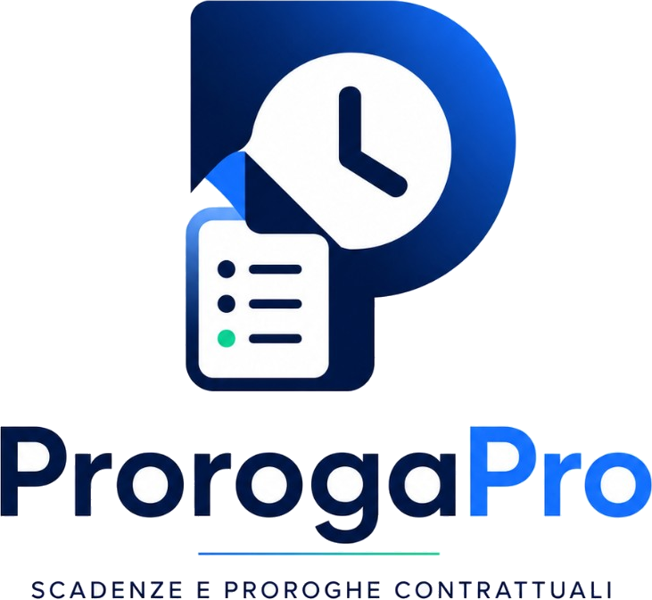

Dashboard operativa
Metriche chiave, contratti in evidenza e priorita immediate in un unico punto.

ProrogaProPresentazione Progetto
ProrogaPro e una piattaforma web orientata al lavoro quotidiano: dashboard operativa, workflow per team, alert intelligenti e strumenti di export pensati per contesti aziendali.
Panoramica
Metriche chiave, contratti in evidenza e priorita immediate in un unico punto.
Scadenze distribuite nel tempo con lettura visuale rapida per la pianificazione.
Distribuzione contratti, indicatori di rischio e trend utili alle decisioni.
Gestione account, notifiche, sync e strumenti di backup in una sezione dedicata.
Architettura
Interfaccia chiara e orientata al lavoro quotidiano, progettata per ridurre i passaggi e aumentare la produttivita.
Autenticazione centralizzata e governance dei ruoli per garantire accesso coerente ai dati e alle funzioni.
Notifiche, analisi e strumenti di condivisione risultati per supportare team, management e processi decisionali.
Login e caricamento profilo aziendale
Gestione contratti e monitoraggio scadenze
Analisi KPI, notifiche e azioni correttive
Export e condivisione report